1.开始界面
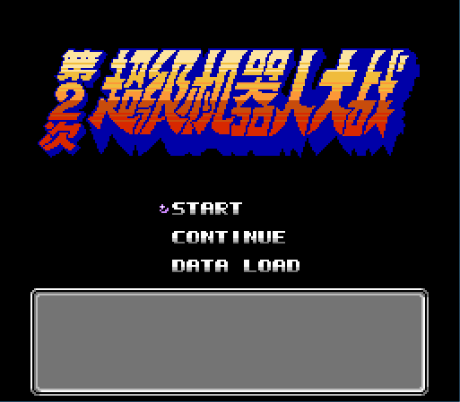
START：开始游戏
CONTINUE：继续游戏（战场存档）
DATA LAOD：加载数据（关卡存档）
2.战场界面
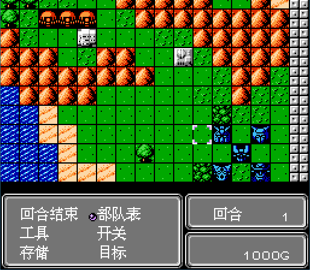
回合结束：结束我方行动，转至敌方行动（回合结束指令执行后我方已经附加的精神状态强攻、热血、防守、瞄准、回避效果不会被清除）
部队表：查看我方在场人员的名称、等级、当前HP、最大HP（通过确定键可返回地图界面，光标指向部队表中选定人物）
工具：查看当前持有的工具，并通过确定键对指定单位使用
开关：开启或者关闭在变形时候的变形动画
存储：存储当前进度，在开始界面通过选择CONTINUE可以继续游戏（可以通过此指令达到SL【详见游戏说明-攻略心得-实战理论-关于SAVE、LOAD】的目的）
目标：查看本关的�倮�条件和失败条件
回合数：当前回合数，通过此数据玩家可以提前预知回合事件和敌方出击的时机
金钱：拥有的金钱总数可通过击落敌方获得，可用于购买道具和修理机体
2.1部队表
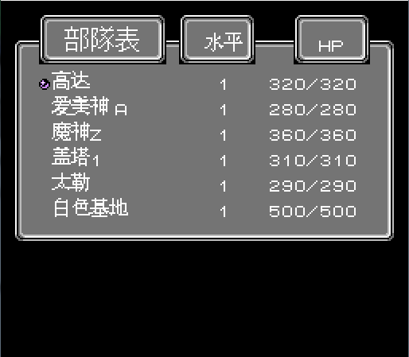
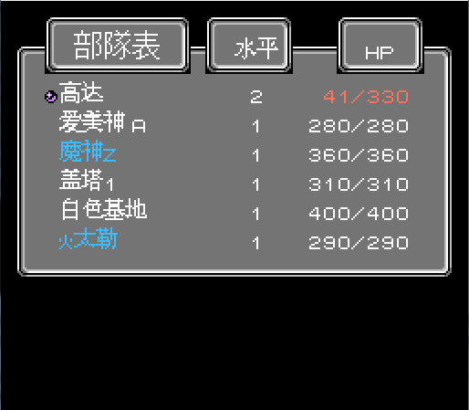
2.1.1部队表可以查看当前关卡我方所有在场单位某个时刻的水平和当前HP、最大HP状况。部队表的排列顺序是按照我方编号排序的，其中母舰编号默认为00，如上图所示，高达的编号是01，爱美神A是02，当然不一定是01，02，03这样的编号，排列顺序只是一个根据编号大小的原则，具体编号看游戏的设定。
2.1.2某些时候我们可以观察到部队有一些异常情况，例如机体名称前面有一个"火"的标志，或者是出现机体名称变红、HP变蓝的状况。拥有“火”标志的机体表明此时正处于搭载状态，蓝名表示已经行动完毕，HP变红表示当前HP不到最大HP的30%。
2.1.3我们可以通过将选择光标移动到机体名称前，按确定键，此时界面会切换回地图界面，同时操作光标会指向被选择的单位。
2.2工具
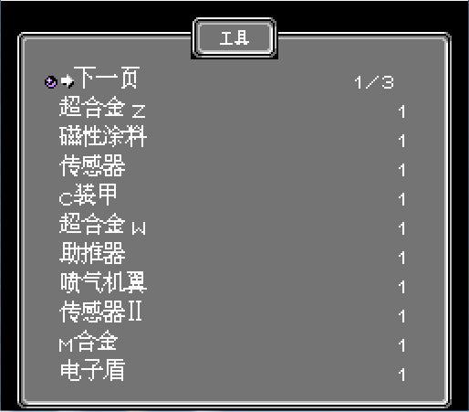
在原版中道具可以通过商店进行购买，能购买的只有一部分道具，大多数道具是无法购买的，例如第二关的米诺夫粒子，只能看，不能买。我们可以通过工具栏看到道具的名称和拥有的数量，通过光标选择道具进行使用。如果不同道具的数量超过一页，可以选择“下一页”来切换道具的显示并进行使用。
2.2.1对于永久性属性增益的道具，我们将光标移动至相应的道具上，按确定键，即可弹出相应的机体属性显示界面，此时选择一个需要使用道具的机体，即可将属性增益赋予该机体。
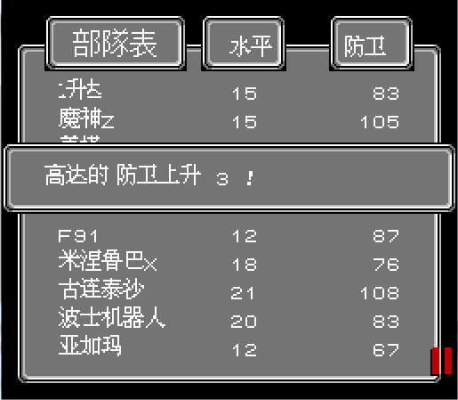
2.2.2对于消耗类道的道具，我们同样将光标移动至相应的道具上，按确定键，依据道具的功能，可选择需要使用的机体进行选择使用。在选择的时候会出现和传真球一样的图标，以此来选择机体进行使用。
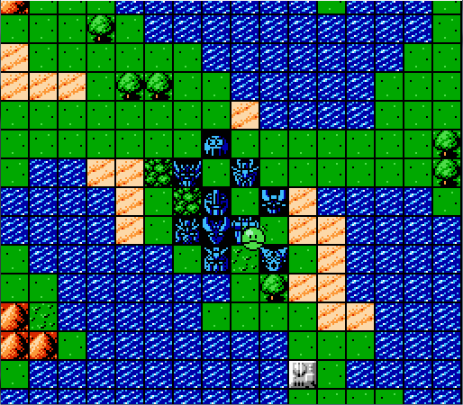
2.3目标
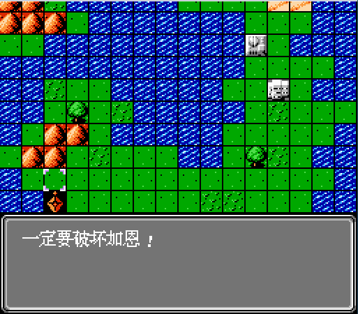
目标可以查看当前关卡的胜利或者失败条件说明，需要注意的是这仅仅是一个提示，在改版中这个取决于作者的主观意愿，所以可能出现目标说明与实际情况不符的情况。
3.机体操作界面
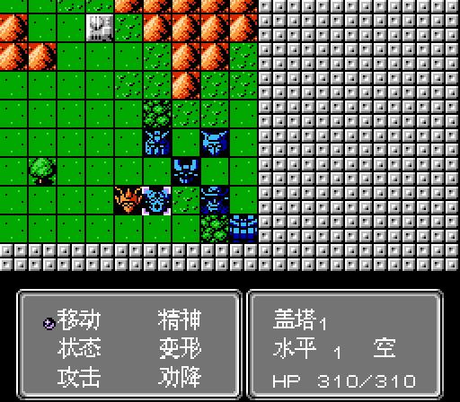
移动：移动己方单位到指定位置
精神：消耗SP以获得增益效果
状态：查看己方单位的机体参数
变形：改变机体形态至另一形态
攻击：选定武器攻击敌方单位（近战武器可移动后使用，远程武器不可）
劝降：由我方指定单位对话指定敌方单位
3.1移动
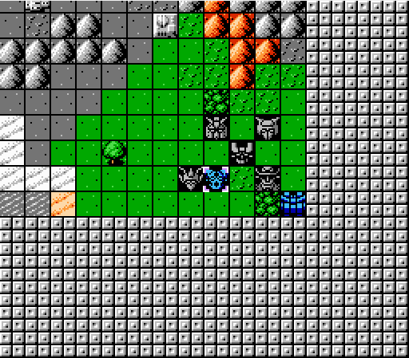
移动当前操作机体至指定位置，移动范围取决于机体机动值，陆、海单位会受到地形机动补正的影响；移动过程中可穿越我方单位，不可径直穿越敌方单位和地形阻碍（只能绕行）。PS:移动光标时按住B键可加速光标移动
3.2精神
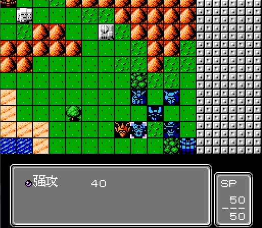
消耗SP以增加一个BUFF或者增益，包括血量恢复、伤害增加、伤害减免等等（详见游戏说明-游戏简介-参数说明-显参-精神）；当前SP值小于精神值消耗值时无法使用该精神；在精神使用时我们可以同时查看到当前操作机体的剩余SP和最大SP和相关精神的消耗值。
3.3状态
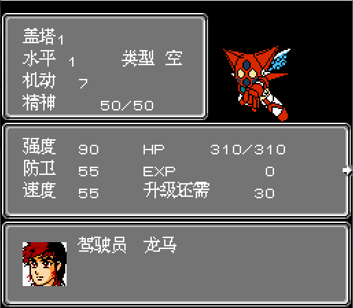
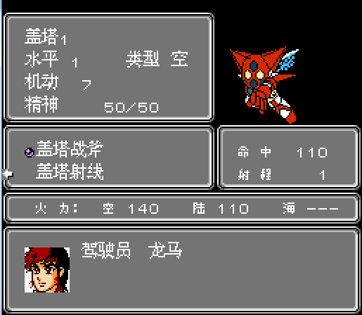
机体状态包含机体除特殊技能以外的参数以及其他信息说明，详见上图（所有参数介绍参照游戏说明-游戏简介-参数说明）
3.4变形
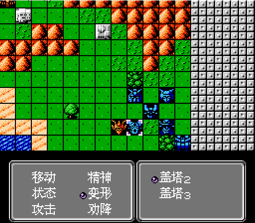
通过变形改变机体形态，相应的改变相关参数（HP保持不变），二段和四段变形不改变驾驶员，三段变形会改变驾驶员以及相应的精神指令。
3.5攻击
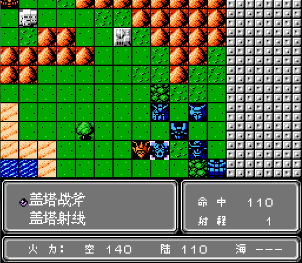
在当前操作单位所持有的两个武器攻击范围之内可选择可攻击的武器攻击敌方单位，或者在移动之后贴身敌方单位并且满足可攻击条件之后使用该指令（详见游戏说明-游戏简介-参数说明-武器）
3.5.1攻击武器的选择
大多数机体配置了两个武器，对于机体未进行移动的情况，在攻击范围内有敌方单位，那么可选择远程武器进行攻击（如果移动了就不能选择远程武器攻击了，地图炮除外）；武器选择面板显示了当前所选择武器的命中、射程、对于各个地形适应的火力五个参数。在机体移动之后，如果贴身了敌方单位，如果满足可攻击条件，即可选择相应的武器进行攻击。
3.5.2目标选择
在选择攻击指令之后，会出现以上的武器选择面板，在选择了相应的武器之后光标会由控制光标转变为攻击光标，此时可通过方向键的移动来选择可攻击单位（非灰色范围为可攻击范围），也可使用select让系统自动进行攻击目标的选择，再次按下即可切换可攻击目标。
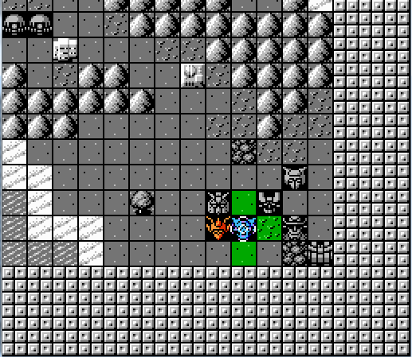
3.6劝降
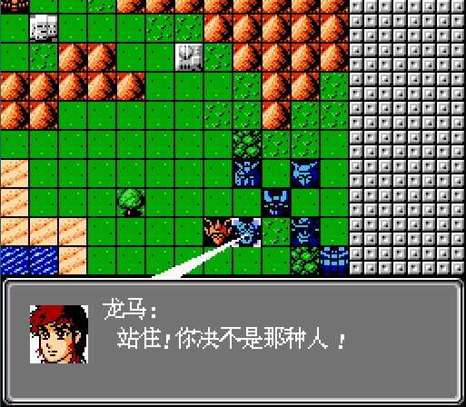
使用劝降（一般而言是指定人物对指定人物）对话敌方单位以获得一个隐藏要素（例如第十三关捷多劝降普露）或者使得敌方单位加入（例如第三关阿姆罗劝降拉拉），当然劝降也可以是发生其他任意在本游戏逻辑之中的行为，当然，什么都不发生也可以(蓝色部分参照修改资料和修改心得中关于事件的部分）
4.读档、存档界面
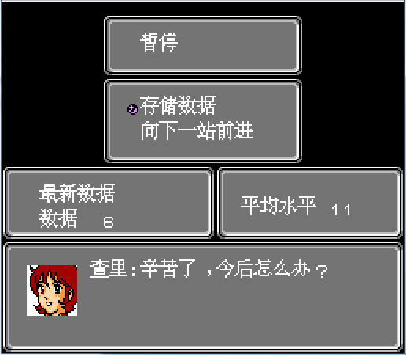
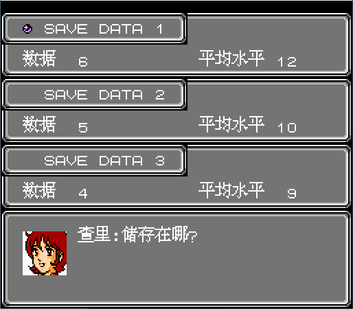
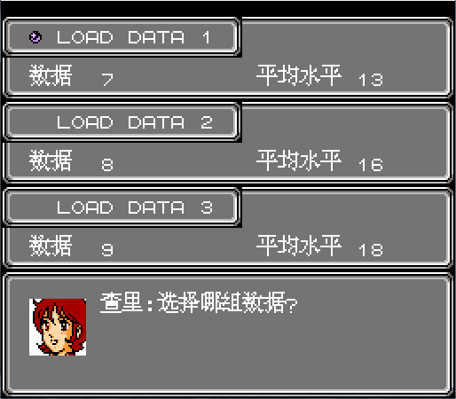
在关卡结束之后，如果没有被击落之后需要修理的机体，我们会进入存储选择界面，如图一所示，可以直接选择“向下一站前进”直接进入下一关，也可选择存储数据对前面的关卡数据进行存储，如图二所示。可以选择的存档插槽一共为三个，显示的“数据+数字”为当前结束关卡的关卡编号，例如数据6，表明第六关已经结束。平均等级为在结束当前关卡之后所有在队人员的平均等级（编制在队，不出战的队员也计入其中）。在选择存储数据之后，如果原来的存档插槽有数据，那么相应的数据则会被覆盖；在游戏开始时，我们可以选择“DATA LOAD”读取关卡存档，也就是如图三所示，此时我们选择任意一个存档即可继续游戏。